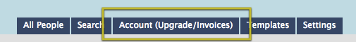
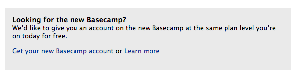
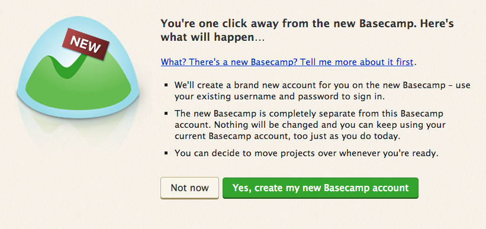
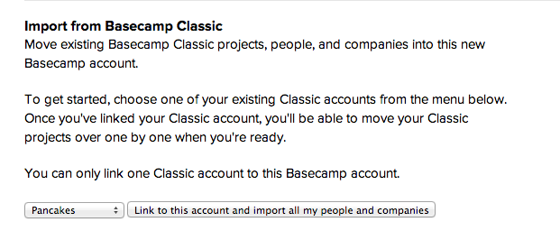
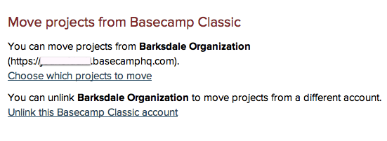

Quick question? Get fast answers on Twitter.
Tweet a question to @37signals for a quick answer between – Mon–Fri.
You're welcome to use your Basecamp Classic account as long as you like. When you're ready, it's easy for you to move your Classic projects into the new and improved version of Basecamp. And if you keep your Classic account open, the new Basecamp is yours for free!
Click the Account tab in Basecamp Classic. Scroll to the bottom of the page to set up your new Basecamp account.


Click "Create my new Basecamp account," and bam! The Basecamp Classic account and the new Basecamp account will be linked, and you can start migrating projects. 
If you set up an account without going through Basecamp Classic, don't worry! You can link them together on your Account page in the new Basecamp.

Your Account page in the new Basecamp will give you the option to migrate your projects over from Basecamp Classic. Click 'Choose which projects to move'.

Classic projects migrate to the new Basecamp very easily, but there are a few changes you may want to keep in mind:
If you don't want your Classic and new accounts linked anymore, you can unlink them from the Account page in new Basecamp.
Next help article: Plans and pricing →
Tweet a question to @37signals for a quick answer between – Mon–Fri.
For in-depth questions, you can file a support ticket to get answered personally by us.